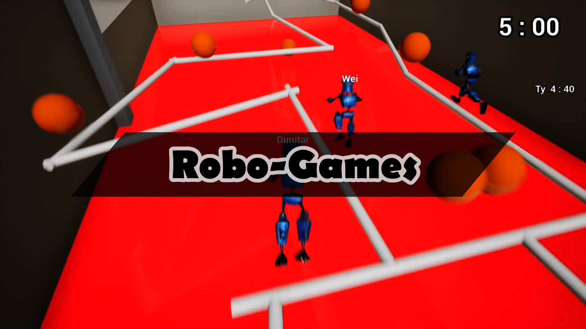
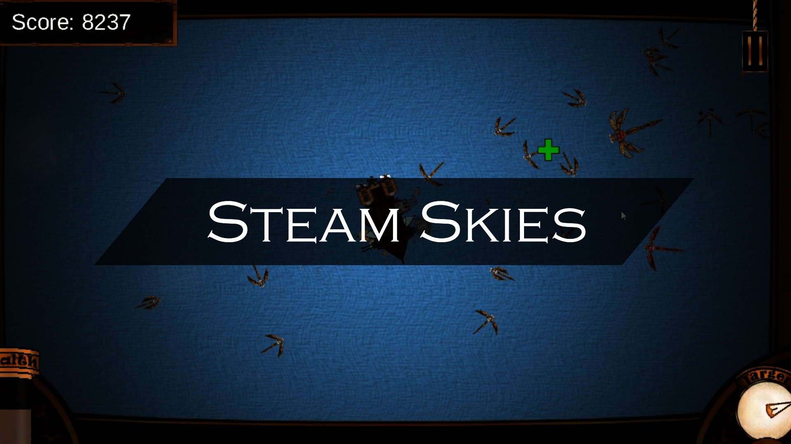

Dimitar Dinkov
Hello! I am a game developer local to Washington State that is open to work.
I have experience with C/C++/C#, Unity Engine, Unreal Engine, and several additional tools and languages.
I was most recently employed at Bungie where I worked on Destiny 2 between March 2022 and July 2024. I learned a tremendous amount from my time with the company where I was surrounded by industry veterans and made many large-scale contributions to shipped features and updates.
I graduated from DigiPen Institute of Technology in April 2021 where I attained a Bachelor of Science in Computer Science and Game Design. It was a difficult and humbling voyage but I can confidently say that I have grown as a developer to the point where I will be an efficient, hardworking, and communicative member of any game team. I have a huge passion for programming & design and I'm always willing to take on a challenging project. As well as having academic experience, I'm a quick learner and I'm great at adapting to fast-paced crunch situations!
Portfolio - Industry Experience
Bungie - "Destiny 2"
March 2022 – July 2024
Associate UI Engineer
First-Person Shooter, MMOG • Team of 500+ • Custom C++ Engine
"Players assume the role of a Guardian, protectors of Earth's last safe city as they wield a power called Light to protect humanity from different alien races and combat the looming threat of the Darkness."
Working on "Destiny 2" was the most valuable experience I have gained thus far in my career. I spent over a thousand hours surrounded by highly talented industry veterans honing my skills and making major contributions to the project.
An overview of my completed tasks for this project include:
• Participated and contributed to shipping 9 Seasons and 2 Major Expansions in a fast-paced live-service game.
• Created a UI optimization system that was integrated into Destiny 2 as well as an upcoming game project.
• Contributed to a major “Looking for Game” matchmaking feature that allowed players to group up before an activity.
• Contributed to a player achievement investment feature that generated positive player sentiment and playtime engagement.
• Shipped a long-awaited feature for players to change their character’s in-game gender and appearance.
• Created and managed documentation for multiple features and studio processes.
• Worked with industry standard tools such as Perforce, Visual Studio, Jira, TFS, Confluence, Miro, and Figma.
• Collaborated and communicated effectively with multiple teams of 20+ individuals.
• Integrated “post-launch” security chicken switch abilities into multiple major features.
• Participated in code review process for dozens of coworkers throughout employment.
Portfolio - Academic Projects
"Until You Wake: Black"
Jan. 2021 - April 2021
Gameplay Programmer, Audio Designer & Technical Designer
3D Action Roleplaying • Team of 2 • Unity Engine
"An awakened hero must quell demonic forces within The Goddess’ place of worship and return her power."
"Until You Wake: Black" was the last project that I worked on at DigiPen. It was an invaluable learning experience and the greatest opportunity I had to work with professional-quality art assets in a 3D game environment.
An overview of my completed tasks for this project include:
• Player Controller Implementation (Player Controller from Invector)
• Camera Controller
• Combat
• Interactables
• Transitions
• Cutscenes
• Music, SFX & Soundscape
• UI Design & Implementation
• Menus
• Playtesting
"Legend of The Street"
Sept. 2020 - Dec. 2020
Solo Developer
3D Open World Racing • Solo Project • Unity Engine
"Race through a PlayStation 1 stylized open world completing races, collecting cash & xp, unlocking upgrades and improving your ride to become a street legend!"
"Legend of The Street" was one of my most challenging projects at
DigiPen and was admittedly over-scoped for the time I had to complete it
(4 months), but I completed it by the end of the semester and I am
extremely proud of the final product. For this project, I was inspired
by several popular racing games I had recently played and tried my hand
at making an open-world racing game complete with an xp system, cash, a
collection of upgrades, and a car with semi-realistic driving and tire
dynamics.
An overview of my completed tasks for this project include:
• Player Controller
• Camera Controller
• Car Tuning (Suspension/Tire Dynamics from Unity 3.X)
• Serialization & Save Files
• Open World Map (1 Highway, 2 Full Cities, 1 Mountain Pass)
• Level Design
• Texturing & Art (Partial)
• Racing, Checkpoints & Scoring
• Garage & Upgrades
• User Interface
• User Experience
• Music Controller
• SFX and Soundscape
• Shader Editing (Shader from dsoft20)
• Menus
• Playtesting
"Robogames"
Sept. 2020 - Dec. 2020
Gameplay Programmer & Technical Designer
3D Multiplayer Minigames • Team of 5 • Unreal Engine

"Play through the minigames of Prophunt and The Floor is Lava with up to four of your friends over the internet!"
"Robogames" was a huge learning experience, especially when it comes to working with networked multiplayer in an Unreal project. Furthermore, this was my first experience working with Unreal Engine with C++ instead of Blueprints and I learned a ton about how to work with the engine and IDE together. The final product was functional and fun in many ways but it was unfortunately also plagued by a myriad of issues, bugs, and missing features.
An overview of my completed tasks for this project include:
• Player Controller (Prop Hunt & Floor is Lava)
• Music Controller
• Scrapped Grapple Hook Mechanic
• Client-Server Replication over Networking
"Revisit"
Jan. 2020 - April 2020
Solo Developer
3D Narrative Rock Climbing • Solo Project • Unreal Engine
"Revisit the the dangerous mountain that claimed the life of your friend years ago and reach the peak to see your adventure through."
"Revisit" was a narrative project assignment that turned out extremely well. It tells the story of a protagonist who visited a dangerous mountain with their best friend years ago, only to have their friend misstep and fall to their death on the mountain. The player takes the role of the protagonist revisiting the mountain in attempt to complete the adventure they set out for years ago on their own this time, finding a new connection to their missed friend's soul at the peak.
The story of the game is told in between rock-climbing gameplay sections through triggers and events that bring up narrative captions. At the final moments of the game the protagonist reconnects with their deceased friend through a spiritual fox vessel that awaits them at the peak.
An overview of my completed tasks for this project include:
• Player Controller
• Camera Controller
• Narrative & Story Telling
• Lighting
• World Map & Terrain
• Level Design
• Animation Graphs
• User Interface
• User Experience
• Music Controller
• SFX and Soundscape
• Menus
• Playtesting
"Just Desserts"
Sept. 2019 - April 2020
Gameplay Programmer, Wwise Tech & Technical Designer
3D Action Platformer • Team of 9 • Unreal Engine
"Fight through waves of goons and storm through the evil Muffin Man's castle to overthrow his reign over the Candy Kingdom."
"Just Desserts" was a large undertaking and for many members of my team, myself included, our first time working with Unreal Engine. This project was an extremely valuable experience and ended up showing me the true power of Unreal to really bring a beautiful scene to life even when you don't have dedicated artists on your game team. The final product was a fun and engaging experience, although it had issues with cut content and some bugs mainly due to production delays with the effects of suddenly working remotely due to the Covid-19 lockdowns.
An overview of my completed tasks for this project include:
• Player Controller
• Camera Controller
• Soundscape (Working Directly with Sound Designer)
• Wwise Plugin Integration (Wwise & Wwise Reflect)
• Wwise Spatial Audio Volumes
• Wwise Event Hookup
• Wwise Support
• Animation Graphs
"Ghastly Temple"
Jan. 2019 - April 2019
Solo Developer
2D Action Platformer • Solo Project • Unity Engine
"Purge the evil spirits from an ancient temple by taking control of a totem so that the ghosts that occupied it may return."
"Ghastly Temple" was a huge learning experience for making gameplay elements in Unity Engine and the first full game I made with a commercial engine. The final product ended up being fun but confusing for new players as a result of a lack of tutorialization. Furthermore, the level design could have used a handful of iterations in order to better take advantage of the mechanics present.
An overview of my completed tasks for this project include:
• Player Controller
• Camera Controller
• World Map & Collisions
• Level Design
• Texturing, Art & Sprites
• User Interface
• User Experience
• Music & Music Controller
• SFX and Soundscape
• Enemy AI & Design
• Bullet Patterns
• Menus
• Playtesting
"Abyssal"
Sept. 2018 - April 2019
Audio Engine Programmer, Gameplay Programmer & Technical Designer
2D Action Roleplaying • Team of 11 • Custom C++ Engine
"Delve into the oceanic abyss and slay the evil source that is plaguing the ocean and infecting fish with an aggressive sickness."
"Abyssal" was a lesson in making C++ engines and the difficulties that can arise without years of commercial development. For this project I was in charge of implementing FMOD into our engine and created an easy-to-use system of AudioEmitters and an AudioListener. I also took the reigns on the player controller, camera controller, and filling out the soundscape to create an immersive underwater experience. The development of this game was strained towards the end, but ultimately we ended up with a fun and engaging product that I'm very proud to have contributed to.
An overview of my completed tasks for this project include:
• FMOD Engine Integration (C++ Low Level)
• Audio Listener & Audio Emitter
• SFX & Soundscape
• Music Controller
• Player Controller
• Camera Controller
• Tutorialization
"Steam Skies"
Jan. 2018 - April 2018
Audio Engine Programmer, Gameplay Programmer & Technical Designer
2D Aerial Combat • Team of 5 • Custom C Engine

"Take to the skies to become the greatest air-ship captain and defeat the ultimate pirate boss."
"Steam Skies" was my first serious game project at DigiPen and involved creating a simple game engine out of the rudimentary skeleton of a 2D engine. For this project I mainly focused on FMOD integration and soundscape realization but I also took the lead on the player controller and interactable clouds that the player can fly through. The final product was very fun to play, as playtesting showed, and ended up being a really solid project that I'm proud of. As a team, we collaborated efficiently and created a good game out of our work.
An overview of my completed tasks for this project include:
• FMOD Engine Integration (C Low Level)
• Memory Leak Testing & Repair
• Player Controller
• Camera Controller
• SFX & Soundscape
• Music & Music Controller
• Clouds & Cloud Manager
Education
DigiPen Institute of Technology
Sept. 2017 - April 2021
Bachelor of Science in Computer Science & Game Design
GPA: 3.00
Bellevue College
Sept. 2015 - April. 2017
Running Start - High School Diploma
GPA: 3.25
Lake Washington High School
Sept. 2013 - June 2015
High School Diploma
GPA: 3.67
Skills
Programming & Scripting Languages
C • C# • C++ • Python • HTML • CSS
Game Engines
Unity Engine • Unreal Engine 4 • Custom C/C++ Engines
Audio
Wwise • FMOD (Low Level)
Tools
Valgrind • DrMemory • Visual Studio
Mathematics
Linear Algebra • Calculus • Discrete Algebra
Artificial Intelligence & Data Science
Neural Networks • Perceptron • K-Means • Exploratory Data Analysis • Naïve Bayes Classifier
Source Control
Perforce • Git • Apache Subversion (SVN)
Spoken Languages
English • Bulgarian